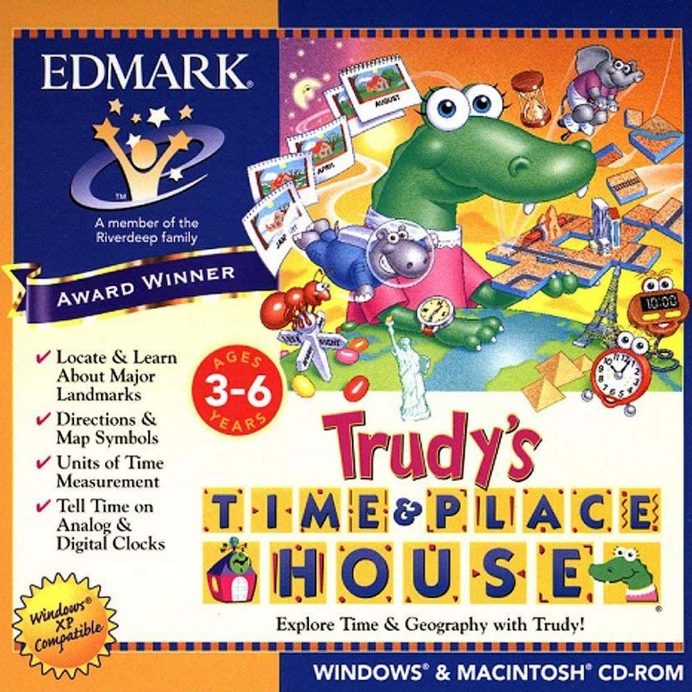
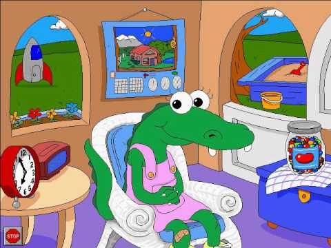
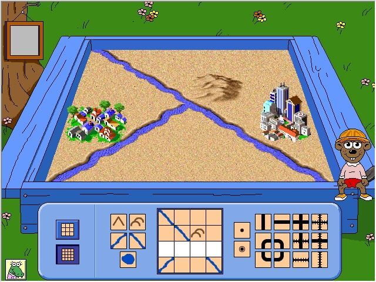

Upon entering Trudy's house, the player will be greeted by an alligator named Trudy, and the encouraged to explore her house. Trudy never leaves her trusty rocking chair, although her voice can be heard whenever playing one of her games.

Trudy's Time and Place Box Art.

Trudy in her favorite rocking chair.

Earth Scout Minigame
- Calender Clock
- Earth Scout
- Symbol Sandbox
- Earth Scout
- Time Twins
- Jellybean Hunt